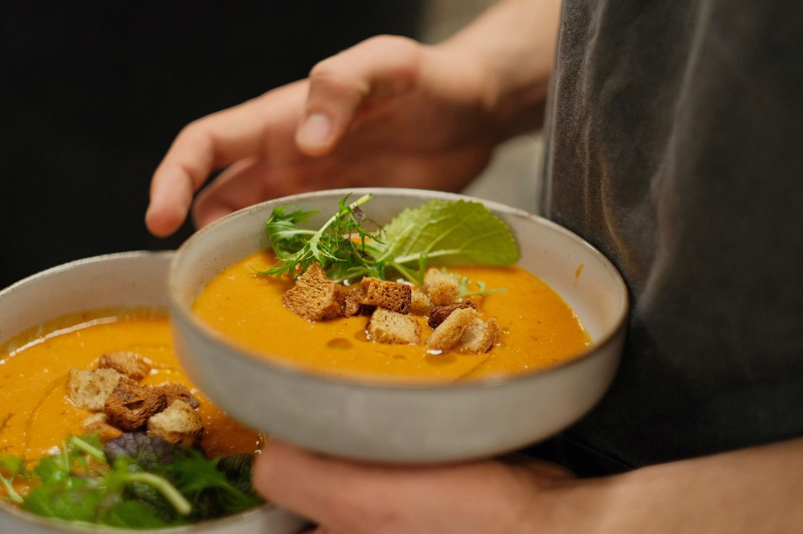

Over ons
Edities
Vrijwilligers
Community
Kookboek
Tickets
EN
☰
Community
Kitchen
Amersfoort
Samen eten van gered voedsel. Een laagdrempelig buurtdiner waar ontmoeten voorop staat.

Volgende editie · nog aan te kondigen
Datum, tijd & locatie binnenkort, volg ons voor updates
Volg voor updates →